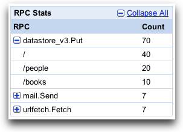
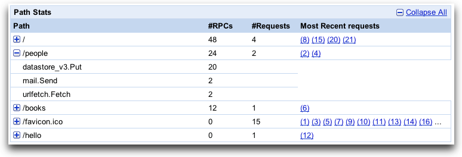
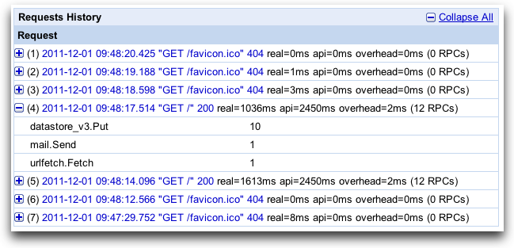
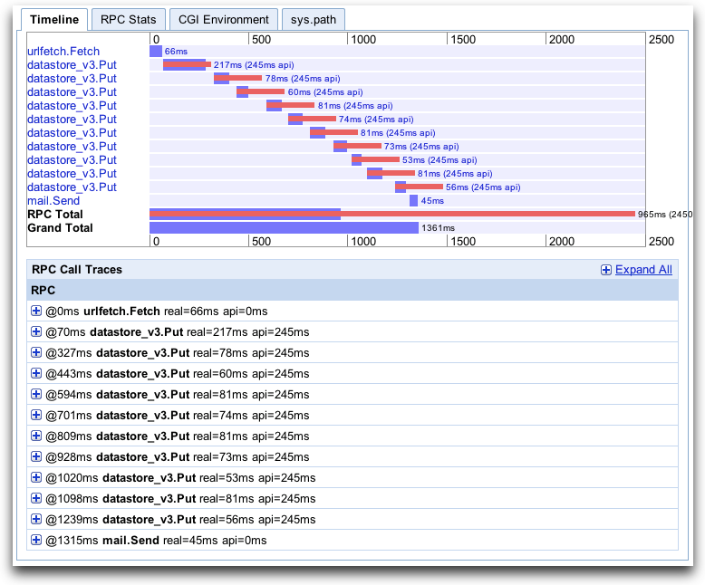

Appstats for Java
The Java SDK includes the Appstats library used for profiling the
RPC
(Remote Procedure Call)
performance of your application.
An App Engine RPC is a roundtrip network call between your application and an
App Engine Service API.
For example, all of these API calls are RPC calls:
-
Datastore
calls such as
DatastoreService.get(),
DatastoreService.put(),
or DatastoreService.query().
-
Memcache
calls such as
MemcacheService.get(),
or MemcacheService.getAll().
-
URL Fetch
calls.
-
Mail
calls.
Optimizing or debugging performance of a scalable application can be a challenge
because numerous issues can cause poor performance.
These issues are very difficult to debug with the usual sources of information,
like logs or request time stats.
Most application requests spend the majority of their time waiting for network
calls to complete as part of satisfying the request.
To keep your application fast, you need to know:
- Is your application making unnecessay RPC calls?
- Should it be caching data instead of making repeated RPC calls to get the same data?
- Will your application perform better if multiple requests are executed in parallel rather than serially?
The Appstats library helps you answer these questions and
verify that your application is using RPC calls in the most efficient way
by allowing you to profile your RPC calls.
Appstats allows you to trace all RPC calls for a given request and reports
on the time consumed by each call.
Optimizing your application's RPC usage may also reduce your bill.
See the
Managing Your App's Resource Usage
article.
Contents:
-
Setup
- Install the Event Recorder
- Set the Console Path
- Optional Configuration
- Test Appstats from the Development Server
- Deploy
- A Tour of the Appstats Console
- How It Works
- Speed Tracer Integration
Setup
There is nothing to download or install to begin using Appstats.
You just need to configure your application, redeploy, and access the Appstats
console as described in the steps below. The Appstats library takes care of
the rest.
1. Install the Event Recorder
Appstats gathers information about each request using a servlet filter,
a class provided by the SDK.
You install the filter on requests you wish to monitor by adding
<filter> and <filter-mapping>
elements to your
deployment descriptor
(web.xml).
To install the servlet filter, add a section similar to
the following in the top-level element of your
web.xml file:
<filter>
<filter-name>appstats</filter-name>
<filter-class>com.google.appengine.tools.appstats.AppstatsFilter</filter-class>
</filter>
<filter-mapping>
<filter-name>appstats</filter-name>
<url-pattern>/*</url-pattern>
</filter-mapping>
This installs the filter for all URLs, with the
<url-pattern> of /*.
(This includes the Appstats web-based console
discussed below,
which you may prefer to exclude from recording.)
You can specify a different pattern to limit Appstats to URLs
that match the pattern.
2. Set the Console Path
The Appstats console is accessed by visiting a URL for your application
in a web browser.
You set up this console as part of your application,
using a servlet class provided by the SDK.
To set up the console at the URL path /appstats/,
secured so that only application administrators can access it, add
the following in the top-level element of your
web.xml file:
<servlet>
<servlet-name>appstats</servlet-name>
<servlet-class>com.google.appengine.tools.appstats.AppstatsServlet</servlet-class>
</servlet>
<servlet-mapping>
<servlet-name>appstats</servlet-name>
<url-pattern>/appstats/*</url-pattern>
</servlet-mapping>
<security-constraint>
<web-resource-collection>
<url-pattern>/appstats/*</url-pattern>
</web-resource-collection>
<auth-constraint>
<role-name>admin</role-name>
</auth-constraint>
</security-constraint>
3. Optional Configuration
Custom Console
You can use
Administration Console Custom Pages
to add a convenient Appstats console link on the Administration Console.
To create a custom link named "Appstats" to the default Appstats console path, add
the following in the top-level element of your
appengine-web.xml file:
<admin-console>
<page name="Appstats" url="/appstats" />
</admin-console>
Logging
The AppstatsFilter class can be configured to write
request-specific information to
application logs.
To enable this logging, modify the filter element
created in step 1
to include the logMessage parameter:
<filter>
<filter-name>appstats</filter-name>
<filter-class>com.google.appengine.tools.appstats.AppstatsFilter</filter-class>
<init-param>
<param-name>logMessage</param-name>
<param-value>Appstats available: /appstats/details?time={ID}</param-value>
</init-param>
</filter>
The text value of param-value is appended to the log for each
request processed by the filter,
with {ID} replaced by the ID of the request.
The text in this example provides a path to the Appstats details
for the request.
These log entries are written at the "INFO" level,
so you must also set the log level to "INFO".
This can be set specifically for the
AppstatsFilter class by adding the following to your
logging.properties file:
com.google.appengine.tools.appstats.AppstatsFilter.level = INFO
Public Access
By default, only authenticated application administrators
can access the Appstats console.
To allow public access to the console, you must do two things:
Warning! Enabling public access to Appstats data allows
anyone to access potentially sensitive data for your application.
4. Test Appstats from the Development Server
You can test your Appstats setup with the development server:
5. Deploy
Once you are satisfied with your Appstats setup, deploy your application.
Access the console at
http://your_app_id.appspot.com/appstats.
A Tour of the Appstats Console
The Appstats Console provides high-level information on RPC calls made,
URL paths requested, a history of recent requests,
and details of individual requests:
-
The RPC Stats table shows statistics for
each type of RPC made by your application.
Clicking a plus button expands the entry to show
a breakdown by path request for the RPC:

-
The Path Stats table shows statistics for
each path request sent to your application.
Clicking a plus button expands the entry to show
a breakdown by RPC for the path request:

-
The Requests History table shows data pertaining to
individual requests.
Clicking a plus button expands the entry to show
a breakdown by RPC.
Clicking on a request link shows a timeline for the request including
individual RPC timing:

-
The RPC Timeline graph shows when specific RPC calls were made and
how long the requests took to process.
The RPC Total
bar shows the total time spent waiting on RPC calls,
and the Grand Total bar shows total time spent processing
the request.
As you can see from the timeline below, the majority of time was spent on RPC calls.
This is often the case.
The other tabs show additional information about the request.
Understanding the impact of RPC calls on your application response time is invaluable
when analyzing its performance.

How It Works
The Appstats servlet filter adds itself to the remote procedure call framework that underlies the App Engine service APIs. It records statistics for all API calls made during the request handler, then stores the data in memcache, using a namespace of __appstats__. Appstats retains statistics for the most recent 1,000 requests (approximately). The data includes summary records, about 200 bytes each, and detail records, which can be up to 100 KB each.
The Java version of Appstats uses fixed values and behaviors for how data is stored in the memcache and the datastore. (These cannot be configured as they can with the Python version of Appstats.)
Speed Tracer Integration
Appstats data can be incorporated in the
Speed Tracer
Google Chrome extension.
Using Speed Tracer and Appstats together gives you a consolidated view
of both client-side and server-side performance.
Follow the steps on the Speed Tracer
Server-Side Tracing
page.
Tip:
Speed Tracer attempts to read the Appstats data for your application.
By default, this access is limited to authenticated administrators.
Therefore, you must log in as an admistrator for your application before
using Speed Tracer.
Alternatively, you could allow public access to Appstats data by following
the steps in the
Public Access
section above.